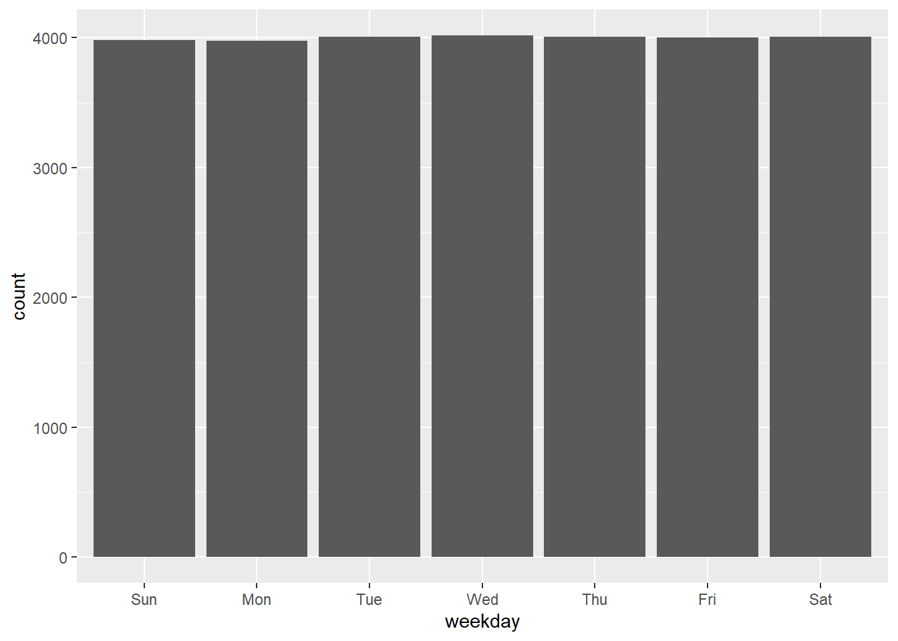
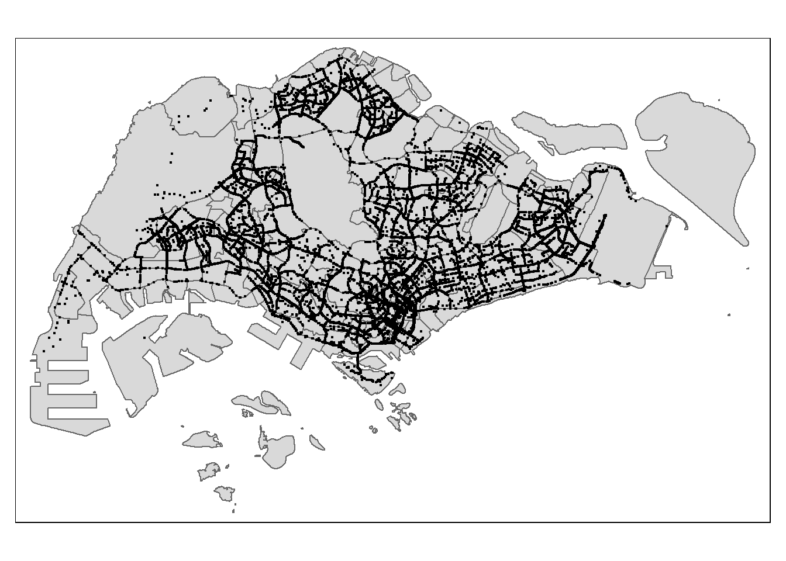

Code
pacman::p_load(arrow, lubridate, tidyverse, sf, tmap)Using the step you learned in previous lesson,
create a folder called In-class_Ex02.
create a new Quarto document called In-class_Ex02.
In this hands-on exercise, the following R packages will be used.
Write a code chunk to load the R packages into R environment.
pacman::p_load(arrow, lubridate, tidyverse, sf, tmap)df <- read_parquet("data/GrabPosisi/part-00000.parquet")read_parquet() of arrow package in used to read parquet format into R. By default, the output file is in tibble data.frame.It is always a good practice to review the data type to ensure that they are in the correct data type format that meet you analysis need.
In the code chunk below, glimpse() of dplyr package is used to display the structure of df tibble data.frame.
glimpse(df)Rows: 3,034,553
Columns: 9
$ trj_id <chr> "70014", "73573", "75567", "1410", "4354", "32630", "646…
$ driving_mode <chr> "car", "car", "car", "car", "car", "car", "car", "car", …
$ osname <chr> "android", "android", "android", "android", "android", "…
$ pingtimestamp <int> 1554943236, 1555582623, 1555141026, 1555731693, 15555844…
$ rawlat <dbl> 1.342326, 1.321781, 1.327088, 1.262482, 1.283799, 1.3003…
$ rawlng <dbl> 103.8890, 103.8564, 103.8613, 103.8238, 103.8072, 103.90…
$ speed <dbl> 18.910000, 17.719076, 14.021548, 13.026521, 14.812943, 2…
$ bearing <int> 248, 44, 34, 181, 93, 73, 82, 321, 324, 31, 203, 50, 252…
$ accuracy <dbl> 3.900, 4.000, 3.900, 4.000, 3.900, 3.900, 3.000, 3.649, …Notice that pingtimestamp is in wrong data type format. It should be in date/time format and not integer.
Write a code chunk to convert the data type of pingtimestamp from character to date-time.
df$pingtimestamp <- as_datetime(df$pingtimestamp)as_datatime of lubridate package is used to convert pingtimestamp from integer to data-time data type.Before moving on to the next step, it is advisable to save the tidy data.frame into rds format for subsequent use. RDS (R Data Serialization) files are a common format for saving R objects in RStudio, and they allow you to preserve the state of an object between R sessions. Saving your R object as an RDS file in R can be useful for sharing your work with others, replicating your analysis, or simply storing your work for later use.
Write a code chunk to save the reformatted df into a new rds file called part0.rds. Save the output into a sub-folder call rds.
write_rds(df, "data/rds/part0.rds")Using the step you learned in previous lesson,
origin_df <- df %>%
group_by(trj_id) %>%
arrange(pingtimestamp) %>%
filter(row_number()==1) %>%
mutate(weekday = wday(pingtimestamp,
label=TRUE,
abbr=TRUE),
start_hr = factor(hour(pingtimestamp)),
day = factor(mday(pingtimestamp)))group_by() of dplyr is used to group the records according to the values of trj_id.arrange() of dplyr package is used to sort the rows of a data frame by the values of selected column(s). By default, the records will be sorted ascendingly.filter() of dplyr is used to retaining all rows that meet the selection criteria (row_number()==1).mutate() of dplyr is used to derive new fields by using functions.wday() of lubridate package to return the day of the week. By default, a full character of the day (i.e. Sunday) will be returned. The argument of abbr=TRUE will be used to return the abbreviation (i.e. Sun).hour() returns hour of the day.mday() returns the day of the month.Write a code chunk to extract trips’ destination locations. Similarly, derive the weekday, ending hour and day of the month columns.
destination_df <- df %>%
group_by(trj_id) %>%
arrange(desc(pingtimestamp)) %>%
filter(row_number()==1) %>%
mutate(weekday = wday(pingtimestamp,
label=TRUE,
abbr=TRUE),
end_hr = factor(hour(pingtimestamp)),
day = factor(mday(pingtimestamp)))When you are happy with the quality of the tidied data, remember to save them for future used.
write_rds(origin_df, "data/rds/origin_df.rds")
write_rds(destination_df, "data/rds/destination_df.rds")If necessary, the code chunk below will be used to import the data.
origin_df <- read_rds("data/rds/origin_df.rds")
destination_df <- read_rds("data/rds/destination_df.rds")origin_sf <- st_as_sf(origin_df,
coords = c("rawlng", "rawlat"),
crs = 4326) %>%
st_transform(crs = 3414)Things to learn from the code chunk above
st_as_sf() of sf package is used to convert the tibble data.frame into sf tibble data.frame.st_transform() is used to transform from into a new coordinates system.After data preparation, it is always a good practice to visualise the data by using appropriate EDA or map visualisation methods.
In the code chunk below, ggplot functions are used to reveal the distribution of origin trips by day of the week.
ggplot(data=origin_df,
aes(x=weekday)) +
geom_bar()
In the code chunk below, tmap functions are used to plot a point symbol map by using the origin trips locations.
tmap_mode("plot")
tm_shape(origin_sf) +
tm_dots()
It is always useful for us to provide the map data a context.
Using the step your learned from previous lesson, import Master Plan 2019 Subzone downloaded from data.Gov as sf tibble data.frame. Call the output mpsz2019.
mpsz2019 <- st_read("data/dataGov/MPSZ2019.kml") %>%
st_transform(crs = 3414)Reading layer `URA_MP19_SUBZONE_NO_SEA_PL' from data source
`D:\tskam\IS415-GAA\In-class_Ex\In-class_Ex02\data\dataGov\MPSZ2019.kml'
using driver `KML'
Simple feature collection with 332 features and 2 fields
Geometry type: MULTIPOLYGON
Dimension: XY, XYZ
Bounding box: xmin: 103.6057 ymin: 1.158699 xmax: 104.0885 ymax: 1.470775
z_range: zmin: 0 zmax: 0
Geodetic CRS: WGS 84Using the step your learned, plot a point symbol map look similar to the figure below.
tm_shape(mpsz2019) +
tm_polygons() +
tm_shape(origin_sf) +
tm_dots()
Thing to learn from the code chunk above